¿Cómo trabajar en equipo?
Requisitos
- Visual Studio Code (Descargar)
- Extensiones: Live Share y Live Server
- Ngrok
¿Para qué usaremos cada cosa?
Visual Studio Code: Como editor de codigo.
Live Share: Para editar el codigo en tiempo real con sus compañeros de trabajo.
Live Server: Para crear un servidor y ver la pagina en tiempo real.
Ngrok: Utilizado para crear una pagina abierta al publico.
¿Como configurar todo?
-
Visual Studio Code
-
Live Share
-
Primero lo instalamos como una extensión, en la pestaña de extensiones buscamos Live share y lo instalamos.
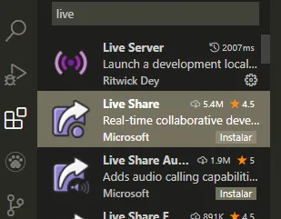 -
Luego de instalarlo, deberemos iniciar sesion (ya sea con Microsoft o con Github).
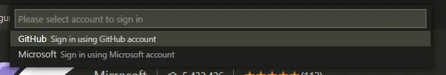
Una vez ya registrados, podemos crear una sesion de trabajo o bien unirnos a una.
Para crear la sesion nosotros, hacemos click en nuestro nombre de usuario y elegimos Start Collaboration Session se creara un enlace de invitacion que debemos compartir con nuestros compañeros. Para nosotros unirnos a una sesion, elegimos la opcion Join Collaboration Session nos van a pedir el enlace de invitacion de el anfitrion, lo ingresamos.
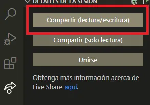 -
-
Live Server
En la pestaña de extensiones, buscamos Live Server y lo instalamos
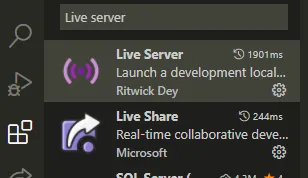
Hacemos clic en el engranaje y seleccionamos Extension Settings Dentro de el apartado User vamos a la opcion de AutoSave y cambiamos el ajuste de off por OnFocusChange, esto para que cada vez que hagamos click fuera del archivo se guarde automaticamente.
-
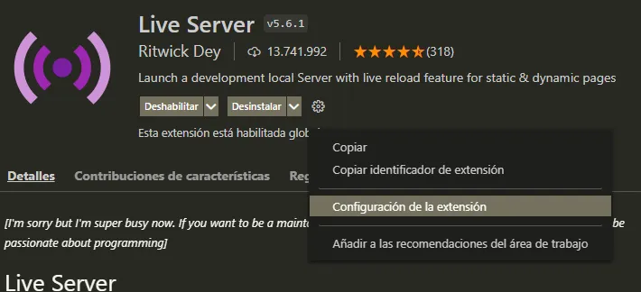 -
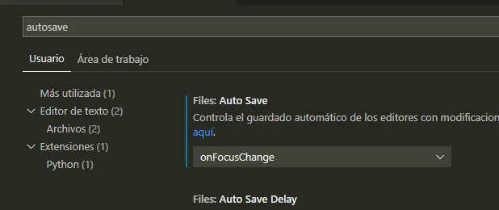
-
-
Ngrok
-
Creamos una cuenta e iniciamos sesion.
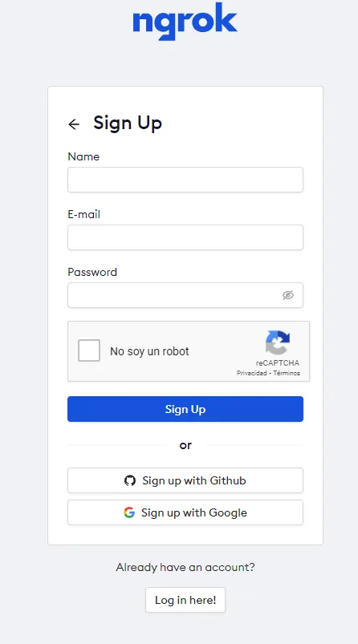 -
Una vez creada la cuenta, nos enviara al "dashboard" de ngrok. Y ahi nos daran un token para poder utilizar el programa
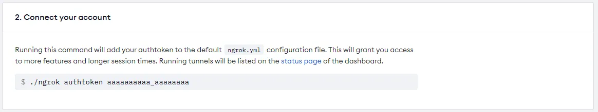 -
Luego de obtener el token, descargamos el programa y recuerden elegir el sistema operativo que utilizan
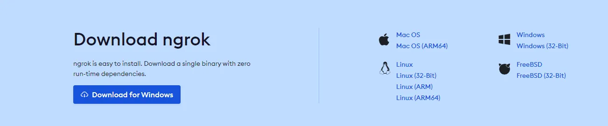 -
Se les descargará un archivo .zip, este lo descompriremos con un programa como 7zip haciendole click derecho y apretando donde dice extraer aqui
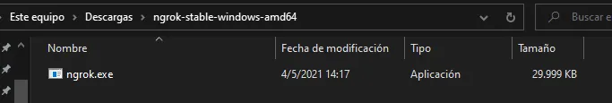 -
Hacemos click sobre donde dice la ruta del programa, en un espacio vacío, y escribimo "cmd". Luego presionen Enter
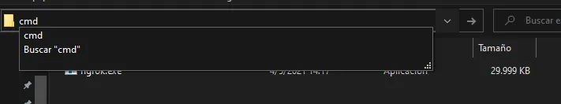 -
Se nos abrira una ventana negra, es la consola de windows. Si seguimos todos los pasos correctos, ahi ponemos nuestro token y escribimos "
ngrok.exe authtoken ************************", luego presionamos enter.
Luego de eso, nos deberia decir "Authtoken saved to configuration file"
Ahora, ¿Cómo se usa?
-
Es muy facil, habiendo seguido todos los pasos anteriores, ya deberia estar configurado, y para usarlo, podemos hacer el paso donde dice de poner cmd arriba de la ventana. Una ves abierta la consola, el programa funciona de la siguiente manera
"ngrok.exe (protocolo) (puerto)". Entonces, en la consola ponemos "ngrok.exe http 5500". ¿Por qué? Bien "ngrok.exe" esta referenciando al programa, "https" le dice al programa que queremos usar el protocolo http, que es de paginas web, y el "5500" le dice al programa que vamos a usar el puerto 5500, que es el puerto que utiliza live server para ver la pagina en tiempo real
Una vez hayamos hecho todo eso, nos aparecera una ventana asi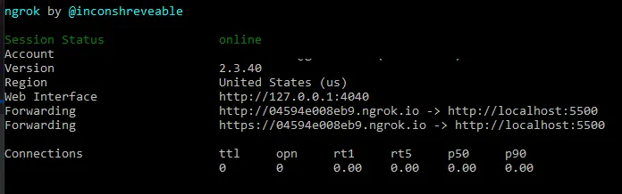 -
Lo unico que tenemos que hacer es copiar uno de los dos links de "forwarding" y pasarselo a nuestros amigos, en nuestro caso vamos a usar el link "https://04594e008eb9.ngrok.io" y ya podremos compartirlo con nuestros amigos para editar la pagina
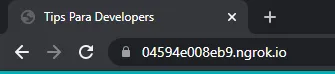
-